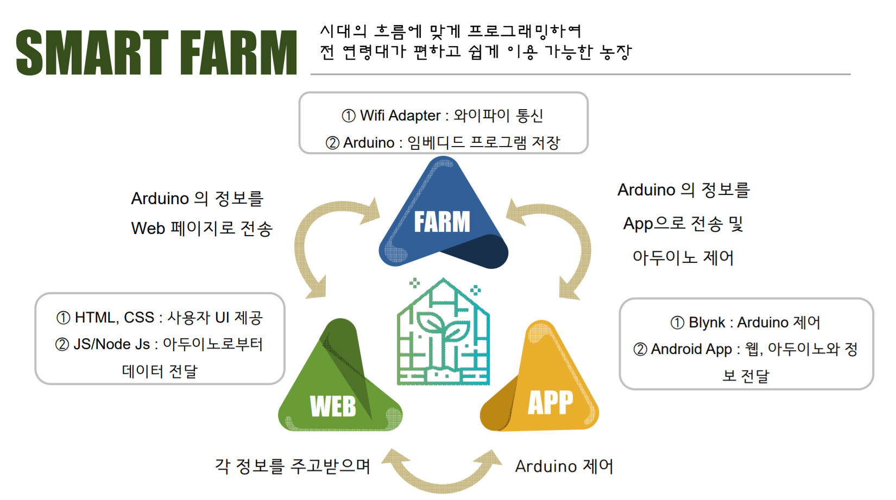
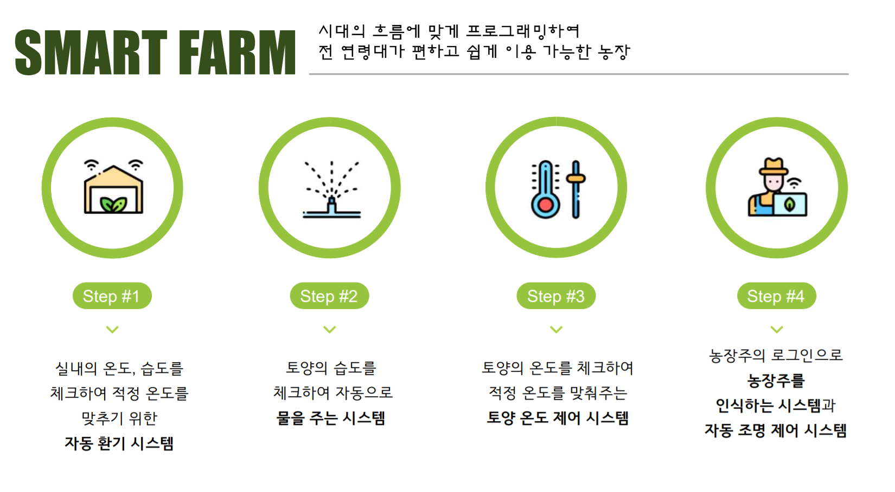
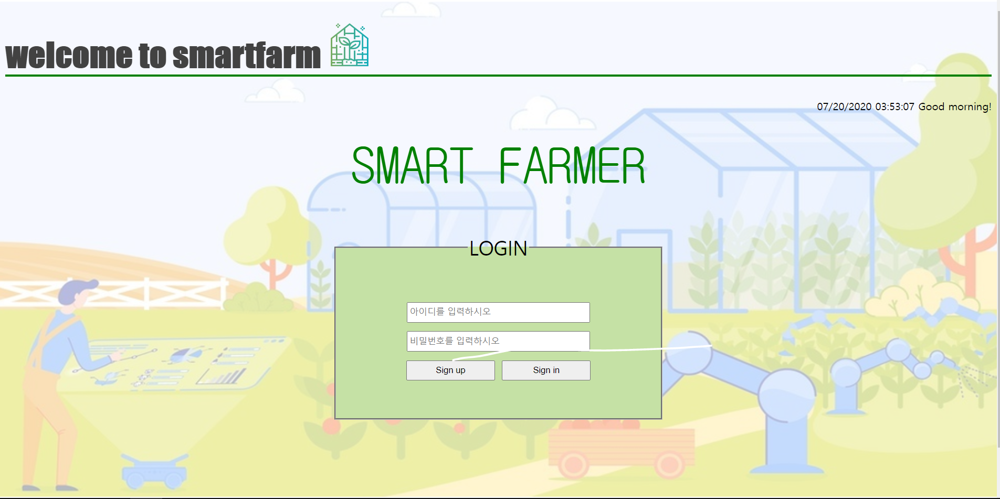
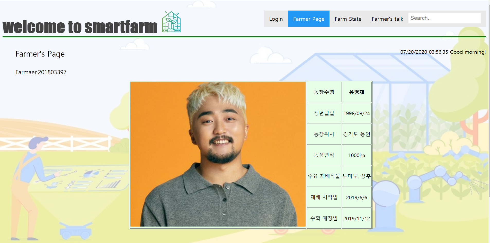
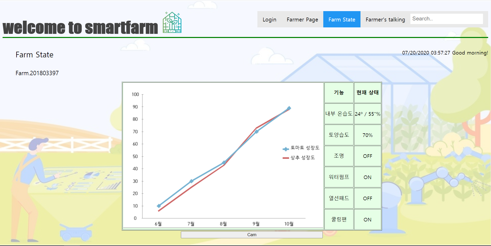

Smart Farm
😀 CONTENTS


-
귀농하고자 하는 사람들이 많아지는 추세에서 스마트하게 이용 가능한
농장을 만들고자 함
-
실내 온습도 체크하여 적정 온도를 위한 자동 환기 시스템
- 토양 온습도 체크하여 자동으로 수분 공급 및 온도 제어 시스템
-
위 기능을 웹과 앱을 통해 제어 및 상태 확인 front만 구현
😀 PART - Web
🔧 HTML5, CSS3, JavaScript
- Login page

- Farmer page

- Farm State page

-
Farm Video (Farm State page에서 Cam 버튼을 누르면 보여지는 비디오)